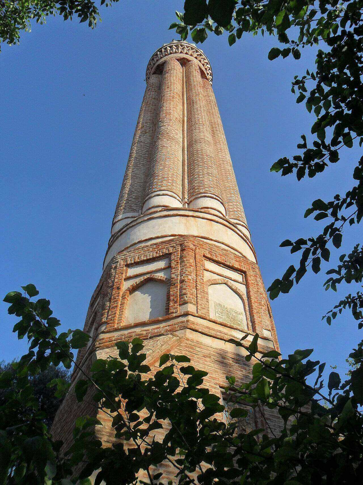

Şehrin en güzel tarihi eserleri arasında sayılan Yivli Minare, Selçuklu Sultanı 1. Alaeddin
Keykubad’ın, 1230 yılında kiliseden camiye dönüştürdüğü Alaaddin Camii’nden günümüze ulaşmıştır.
Antalya şehir merkezi Kalekapısı’nda yer alan ve kentin sembolleri arasında bulunan yapı, ilk
bakışta etkileyici mimarisi ile göze çarpmaktadır.Antalya'daki ilk İslamî yapılarındandır ve 13.
yüzyıla aittir.
Mimari
Kaidesi kesme taştandır. Gövde kısmı tuğla ve turkuvaz renkli çinilerden yapılmıştır. 8 Yivlidir. Minare günümüzde Antalya'nın sembolü durumuna gelmiştir. Yüksekliği 38 metre olup 90 basamaklı merdiven ile çıkılmaktadır. Yivlerinden dolayı "Yivli Minare" adı verilmiştir.Tarihi
Gıyaseddin Keyhüsrev Medresesi, Atabey Armağan tarafından 1239 tarihinde, II. Gıyaseddin Keyhüsrev adına yaptırılmıştır. Bu eserin kapısının karşısında bir XIII. yüzyıl yapıtı olduğu sanılan Selçuklu Medresesi kalıntıları vardır. Zincirkıran Türbesi, Yivli Minare'nin kuzeyinde ve üst bahçededir. Şekil olarak Selçuklu tarzındadır. Fakat dış yüzeyinin sade olması, pencerelerinin bulunması, içindeki mezarlığın aşağı seviyede olması özellikleri ile Osmanlı Türbeleri karakterini taşır. 1377 yılında yaptırılmış olup 3 adet mezarı korumaktadır. Nigâr Hatûn Türbesi, Yivli Camii'nin kuzeyindedir. Altıgen bir plan üzerine yapılan Türbe'nin sade bir görünümü vardır. Selçuklu tarzında olan Türbe 1502 yılından kalmadır. Zincirkıran Türbesi'nin batısında bulunan yapı Mevlevihane olup I. Alâeddin Keykubad tarafından 1225 yılında yaptırıldığı sanılmaktadır. Kitabesi kaybolmuştur. Onarım görmüştür. Günümüzde güzel sanatlar galerisi olarak kullanılmaktadır. Tarihi
Hadrian Kapısı veya Üçkapılar, 130 yılında Roma İmparatoru Hadrianus'un Antalya'yı ziyareti onuruna, kenti çevreleyen sur üzerinde inşa edilmiş anıtsal zafer takı. Her iki cephesinde dörder mermer sütunun bulunduğu üç kemerli kapı ve yanlarında bulunan iki kuleden oluşur. Kapının üst katı günümüze ulaşamamıştır. 1882'de gün yüzüne çıkarılan kapının alt katı ise 1959'da büyük bir restorasyondan geçirilerek aslında uygun hâle getirilmiştir.Mimari
Zafer takı iki mimarî parçadan oluşmaktadır; kapı kısmı ve kule kısmı. Her iki kısım da önlü arkalı olacak şekilde simetriktir. Kapı kısmı oldukça süslü, desenli ve mermer gibi işlemesi zor madenlerden yapılmışken kule kısmı, surların devamı olacak şekilde taştan, basit şekilde inşa edilmiştir.
Aspendos veya Belkıs, Antalya ili Serik ilçesinde bulunan Belkıs köyünde yer alan antik
tiyatrosuyla meşhur bir antik kenttir. Pamfilya'nın en zengin şehirlerinden
Aspendos'un en önemli yapısı tiyatrosudur. Antik tiyatrolar arasında en iyi şekilde korunarak gelmiş bir açık hava tiyatrosudur. Bu tiyatro Anadolu'daki Roma tiyatrolarının günümüze sahnesi ile ulaşabilen en eski ve sağlam bir örneğidir. Mimarı Aspendos'lu Theodorus'un oğlu Zenon'dur. Antonius Pius zamanında yapımına başlanmış Marcus Aurelius zamanında tamamlanmıştır (138-164). Tiyatro, kentin yerli tanrıları ile imparator ailesine sunulmuştur. Her yıl binlerce yerli, yabancı turist Aspendos'u gezmektedir. Antik tiyatro ayrıca konserler, etkinlikler için kullanılmaktadır.

Aspendos'un en önemli yapısı tiyatrosudur. Antik tiyatrolar arasında en iyi şekilde korunarak gelmiş bir açık hava tiyatrosudur. Bu tiyatro Anadolu'daki Roma tiyatrolarının günümüze sahnesi ile ulaşabilen en eski ve sağlam bir örneğidir. Mimarı Aspendos'lu Theodorus'un oğlu Zenon'dur. Antonius Pius zamanında yapımına başlanmış Marcus Aurelius zamanında tamamlanmıştır (138-164). Tiyatro, kentin yerli tanrıları ile imparator ailesine sunulmuştur. Her yıl binlerce yerli, yabancı turist Aspendos'u gezmektedir. Antik tiyatro ayrıca konserler, etkinlikler için kullanılmaktadır.
Tarihi
Coğrafyacı Strabon ve Pamponrus Mela-(Pomponius Mela), Kentin Agruslularca kurulduğunu yazarlar. Bölgeye MÖ 1200'den sonra Yunan göçleri olmuştur oysa Aspendos adının kaynağı Rumlardan önceki yerli Anadolu dilidir. Önemli bir ticaret yolu üzerinde olduğu ve Köprüçay Irmağı ile limana bağlandığı için Aspendos, her çağda ele geçirilmek istenen kentler arasında yer almıştır. Antik Kent Aspendos İ.Ö. 5. Yüzyıl ilk çeyreğine kadar Pers hakimiyetinde idi. Şehrin yakınlarında akan nehrin kenarında İ.Ö. 467 yılında Yunanlarla Persler arasında geçen, Eurymedon Savaşı adıyla anılan savaşta Yunanlar kazanmıştı.